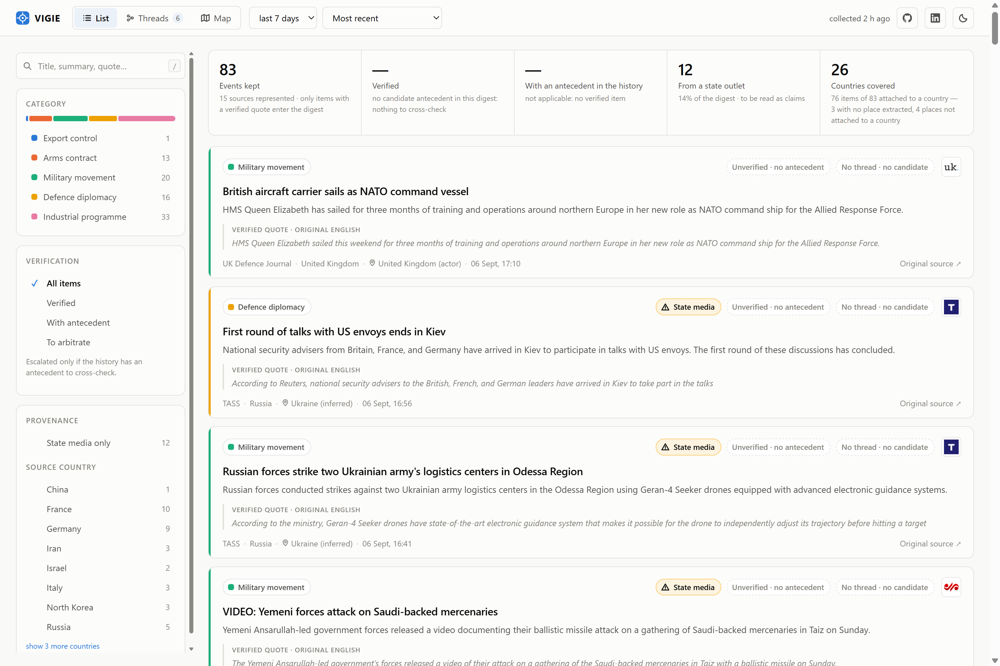
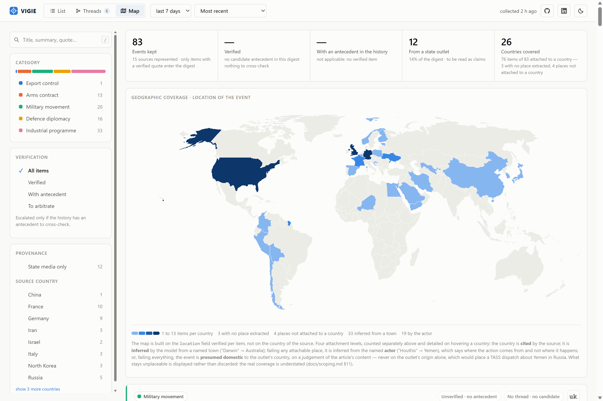
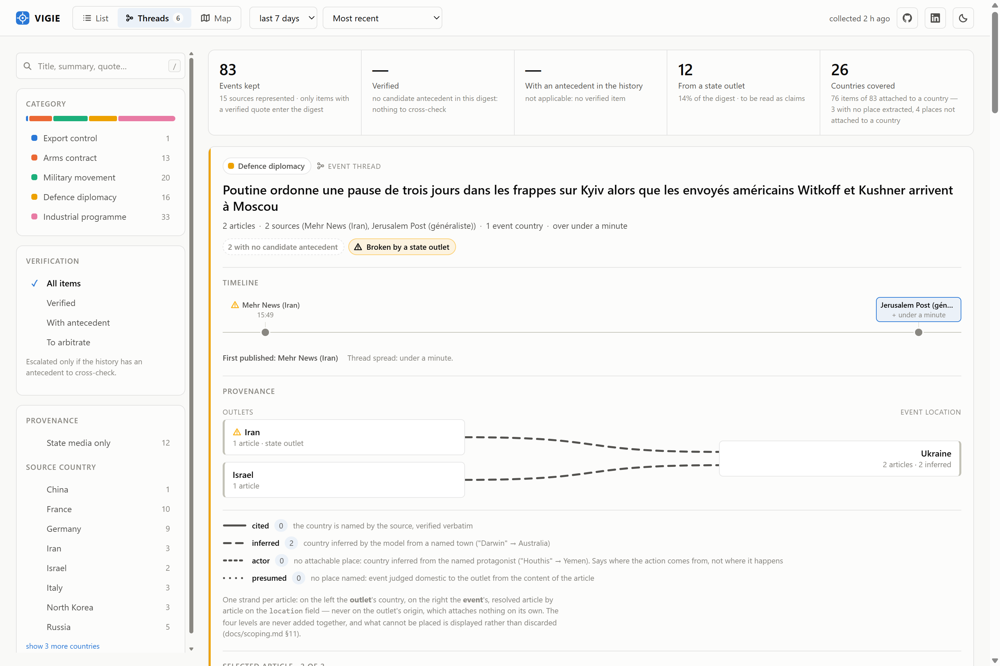

Briefing produit
Un agent IA de veille défense & export-contrôle, cadré et construit comme un livrable réel — pipeline fonctionnel de bout en bout, pas une maquette.
Synthèse
Ce qui suit détaille le cadrage, l'architecture et les preuves — dans cet ordre.
Le problème
Non-objectif explicite : le système ne décide pas. Il accélère et structure la veille humaine — la décision reste humaine.
Cadrage
1 et 3 couverts en V1 · 2 livré en première tranche V2 — périmètre étendu aux cinq catégories le 2026-08-20, l'escalade étant conditionnée à un antécédent candidat mesuré plutôt qu'à la catégorie (cf. feuille de route)
Périmètre MECE
Export control, contrats d'armement, mouvements militaires, diplomatie défense, programmes industriels — filtrage thématique, zone mondiale.
Renseignement classifié, cybersécurité (périmètre voisin distinct), décision automatisée, analyse financière de marché.
Révision assumée : un filtrage géographique strict, testé sur données réelles, rejetait à tort la quasi-totalité de 2 sources sur 5 → retiré, remplacé par une extraction de lieu en métadonnée non filtrante. Documenté comme révision, pas masqué.
Architecture
18 flux RSS, sélection par pays, validés en direct
collector.py
avant l'appel LLM, pas après
classification + résumé + citation vérifiée
recoupement + score de confiance, boucle d'outil bornée
threads d'événements sur l'historique, même boucle bornée
État partagé (VigieState) entre les nœuds, chaque nœud tracé nativement — sans instrumentation manuelle. Les trois premiers nœuds sont un workflow déterministe ; les deux derniers laissent le modèle décider de ses propres appels d'outil, chacun sous double plafond codé — un nœud agentique de plus n'est pas un plafond de plus à oublier.
Ce qui survit aux runs — budget LLM, liens vus, historique analysé — passe par une couche de persistance unique, fichiers locaux en développement et Firestore en production. Le digest servi est une fenêtre glissante sur cet historique, pas la photographie du dernier run : le dédoublonnage vidant les collectes suivantes, servir le run brut effacerait l'affichage à chaque passage.
Restitution

Score de confiance sur une rampe séquentielle et non en rouge/vert — un score lu comme un verdict invaliderait le non-objectif. Un item hors du périmètre du vérificateur sort sans score plutôt qu'avec un zéro. La provenance « média d'État » est affichée, pas noyée.
Couverture

Construite sur le lieu vérifié de l'événement, pas sur le pays de la source. Les items sans lieu extractible et les lieux non rattachables à un pays (espaces maritimes, commandements) sont comptés explicitement : une carte qui ne montrerait que ses succès surestimerait la couverture réelle.
Synthèse

Un thread relie les articles d'un même dossier — mêmes parties, même opération — et non d'un même thème. La chronologie est à l'échelle réelle du temps : l'écart entre les parutions est le signal, et des repères équidistants rendraient identiques trois dépêches en vingt minutes et un dossier étalé sur trois semaines. Aucun score agrégé n'est produit au niveau du thread — moyenner des scores partiellement absents comblerait par un calcul un vide laissé volontairement.
Garde-fou non négociable
Chaque résumé généré par le LLM doit être accompagné d'une citation vérifiée verbatim contre le texte source. Sans preuve, l'item est rejeté automatiquement — pas seulement signalé.
Même principe appliqué au lieu extrait : vide plutôt que non vérifiable.
Valeur estimée
| Poste | Hypothèse | Valeur |
|---|---|---|
| Équipe concernée | 4 analystes dédiés | — |
| Gain de temps | 90 → 30 min de revue / jour / analyste | 528 h/an |
| Valeur temps | 528 h × 60 €/h chargé | ~32 000 €/an |
| Coût du système (mesuré réel) | ~200 items/j × 1 appel + escalade plafonnée | ~140 €/an |
Ratio favorable même en scénario dégradé (gain divisé par deux). Le bénéfice qualitatif — standardisation, traçabilité — reste déterminant au-delà du seul temps.
Risques
Citation verbatim obligatoire, rejet automatique si absente.
Positionnement explicite : aide à la veille, jamais outil de décision automatisée.
Sélection par pays sur critère SIPRI, médias d'État marqués comme tels dans le digest.
Plafond d'appels/jour + escalade agentique bornée — codés et testés, pas seulement documentés.
Preuve par l'usage · 1/2
Une mesure de précision teste autant la clarté des définitions que la qualité du modèle. Les deux s'auditent ensemble — et l'audit s'est corrigé lui-même ici : le cadrage n'énonçait rien sur la frontière incriminée, mais le prompt portait une règle non documentée depuis cinq jours, que le modèle appliquait fidèlement. Désaccord de spécification et non lacune — la règle a été changée, pas ajoutée, et reportée dans le cadrage. Sondée dans la foulée : efficace sur le cas qui la motivait, sans effet sur un second qu'elle nomme pourtant explicitement. Une règle peut être écrite, juste, et ne rien déplacer — le retest complet reste dû.
Preuve par l'usage · 2/2
Remonter du symptôme à la cause plutôt que corriger là où le problème se voit — et documenter ce qui reste non vérifié plutôt que de l'omettre. Aucun de ces défauts n'était visible en relecture de code.
Feuille de route
Deux chantiers, dans cet ordre. Le budget d'abord. L'extension du vérificateur aux cinq catégories a tourné en réel le 2026-08-21 (15 escalades sur 36 articles, 5 avec antécédent) et a saturé le plafond de 200 appels du jour — le déficit est retombé sur le regroupement en threads, dernier de la chaîne. Premier relevé réel le 2026-08-22 : analyse 72 appels, vérification 50, regroupement 73, soit 195 des 200. Il montre que les plafonds d'escalade sont sur-souscrits — ils autorisent 140 appels à eux deux, quand l'analyse en réclame un par article soumis et en a consommé 72 — et que 21 % du budget part sur des articles écartés après analyse. L'arbitrage reste ouvert délibérément : il ne se tranche pas tant que cette part d'un cinquième n'est pas ventilée par source, et la ventilation vient d'être instrumentée. Le déploiement ensuite, et sa moitié dépôt est faite. Le diagnostic n'avait pas buté sur l'absence d'infrastructure mais sur l'absence de journal : le pipeline n'émettait rien, donc les mesures ci-dessus auraient été invisibles sous un ordonnanceur. Journal structuré, endpoint de run fermé par jeton, dépendances épinglées, image conteneur et traitement par lot quotidien sont livrés et validés en local le 2026-08-23 — le lot a tourné de bout en bout contre des flux réels avec le plafond d'appels forcé à zéro, ce qui exerce la troncature sans rien dépenser. Reste la moitié cloud, entière : la persistance de production n'a toujours jamais été exécutée contre une base réelle, et c'est la seule inconnue qu'aucun travail local ne lève.
En synthèse
MECE, alternatives évaluées, KPIs, risques, gouvernance — avec le même niveau d'exigence de vérification empirique du début à la fin, jusqu'à la mesure de précision finale.